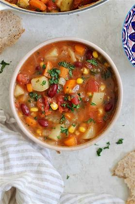

Vegetable soup

Description
Let's hug over bowls of steamy vegetable soup with huge hunks of seedy sourdough! Cuz everyone needs a legit soup recipe in their back pocket and this is yours
Shout out to Alexis Joseph on Hummusapien
Ingredients
- Olive oil
- Mirepoix
- Garlic
- Potatoes
- Kidney beans
- Italian seasoning
- Canned diced tomatoes
- Corn
- Broth
- Lemon
- Parsley
Instructions
- Make the onions sweat
- Add garlic, carrots, celery and potatoes and cook 5 more minutes.
- Add Italian seasoning and cook for a minute
- Add broth, water, corn, beans, tomatoes, and bay leaves
- Bring to a boil. Simmer covered over low heat for 35 minutes, or until veggies are tender
- Stir in the parsley and lemon and season to taste